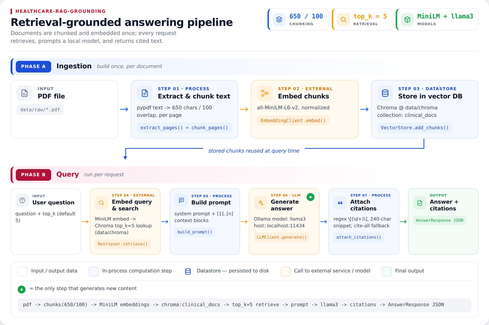
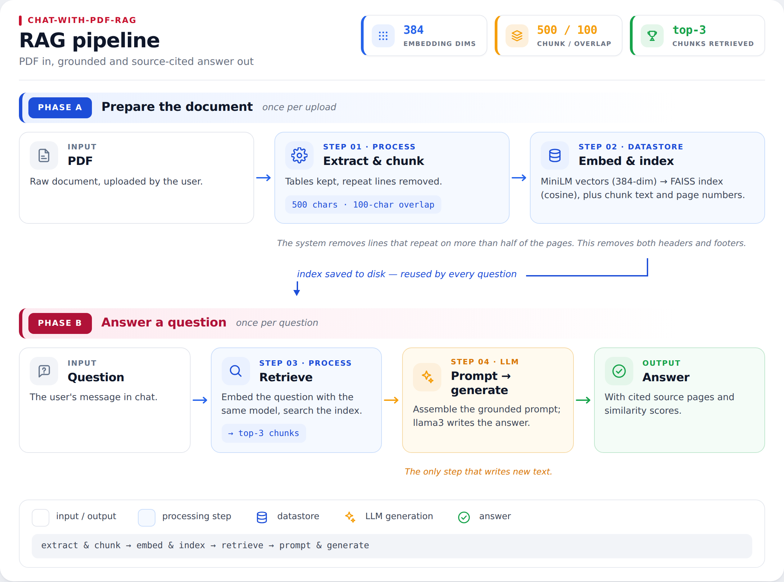
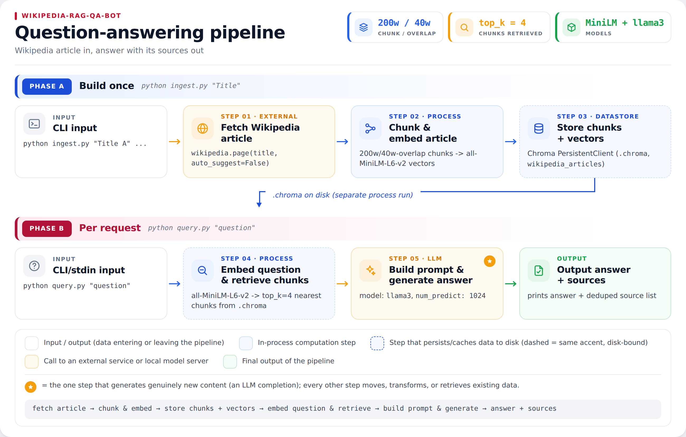

About
Software Engineer
Dhaka, Bangladesh
I'm a Software Engineer with a background in Computer Science and a growing interest in machine learning, NLP, and LLM-based systems.
My professional work has primarily focused on building and maintaining production software, while my research interests have taken me toward Bengali NLP, low-resource language processing, information retrieval, and more recently, RAG and LLM systems.
I enjoy working at the intersection of software engineering and applied AI — taking ideas that look interesting in research and figuring out how they can become useful, reliable systems. When I'm not coding or reading papers, I'm usually planning the next trip — more on that below.
0+
Years
Software Engineering
Software Engineering
0
Research
Publications
Publications
0
RAG / LLM
Projects
Projects
0
Personal Mission
See the world before 40
See the world before 40
Projects
What I build, and how I think — three RAG systems, from a first experiment to a production-shaped system. Click any project for the full breakdown.
Deeper Investigation
Healthcare RAG Grounding
A local-first RAG pipeline that answers healthcare questions from cited clinical PDFs — every answer traceable back to the exact source page.

Problem
Clinical guidelines and fact sheets are long and dense, and an LLM asked about them can produce confident-sounding but unsupported text. The question this project asks: can an answer be grounded well enough that every claim traces back to its source page?
Approach
Documents → Chunking → Embeddings → Retrieval → LLM → Grounded Answer
PDFs are split with a page-boundary-aware chunker, so no chunk ever crosses a page break. Chunks are embedded locally with sentence-transformers and indexed in Chroma. At query time, the most relevant chunks are retrieved and passed to a local Ollama model, which is prompted to cite the passage(s) it used — mapped back to the originating file, page, and snippet in the response.
Why it matters
An answer with no citation is a claim you have to take on faith. Tracing every answer back to a specific source page turns "trust the model" into "check the source" — especially important for anything healthcare-adjacent.
Technology
- FastAPI
- pypdf
- sentence-transformers
- Chroma
- Ollama
What I learned
Citing a chunk isn't the same as verifying the answer is actually supported by it — right now the pipeline confirms which passage the model says it used, not that the claim is factually backed by that text. A verification layer that checks generated claims against the cited passage is the natural next step.
Application
Chat with PDF (RAG)
A multi-user RAG web app built stage-by-stage — each pipeline step implemented and understood on its own, not borrowed from a library.

Problem
Most "chat with your PDF" tutorials skip straight to a working demo built on top of a RAG library, which hides how each step actually works. That makes the pipeline hard to debug or improve once something goes wrong.
Approach
PDF → Chunking → Embeddings → Vector Index → Retrieval → Prompt → Generation
Built one stage at a time — text extraction, configurable-size chunking, embeddings via sentence-transformers, a vector index for retrieval, and prompt construction for generation — with a FastAPI web app layered on top: signup/login with bcrypt-hashed passwords and signed session cookies, per-user document storage, and a Docker Compose deployment (exposed for quick testing via a Cloudflare Tunnel).
Why it matters
Treating RAG as a black box makes it hard to know where an answer went wrong — a bad chunk, a weak embedding match, or a prompt issue? Building each stage individually turns those into questions you can actually answer.
Technology
- FastAPI
- SQLAlchemy / SQLite
- sentence-transformers
- FAISS
- Ollama
- Docker
What I learned
Building it stage-by-stage made the tradeoffs concrete instead of theoretical — fixed-size vs. semantic chunking, and why a vector index beats brute-force similarity search once a document collection grows past a handful of files.
Experiment
Wikipedia RAG QA Bot
A domain-scoped question-answering bot: ingest specific Wikipedia articles, then answer only from that stored text — the first hands-on build of the retrieve-then-generate pattern.

Problem
Could a small, self-contained retrieve-then-generate loop actually work end-to-end — and stay scoped to a chosen set of sources instead of answering from the model's general knowledge?
Approach
Named Wikipedia Articles → Ingest → Embed → Retrieve → LLM → Answer
Ingests one or more named Wikipedia articles into stored text, then answers questions using only that text: a question is embedded, the most relevant passages are retrieved, and a local Ollama model (llama3) generates the answer — runnable as a one-off query or an interactive prompt.
Why it matters
Constraining a QA system to a named, specific set of sources is the simplest way to keep its answers scoped and predictable — a useful first checkpoint before adding real-world complexity like multi-document or multi-user support.
Technology
- Python
- Ollama
- Local Embeddings
What I learned
This was the first end-to-end retrieve-then-generate loop I built — the main lesson was foundational: get ingest → embed → retrieve → generate working reliably at a small scale before adding any complexity, which is exactly what the next two projects did.
Publications
My research started in Bengali question classification, extended into applied machine learning, and continues informally through the RAG and LLM engineering work above.
A Hybrid Approach Towards Two Stage Bengali Question Classification Utilizing Smart Data Balancing Technique
Ensemble of Classifiers Based Soil Evaluation for Crop Cultivation
Experience
-
Jan 2025 — Present
Software Engineer · Cefalo Bangladesh Ltd, Dhaka
Design and build production backend and frontend systems, including subscription and order-management workflows, with API integrations across internal and third-party services — working across Java/Spring Boot, Django, and Vue.js, deployed on AWS with Docker and Kubernetes.
-
Dec 2022 — Dec 2024
Associate Software Engineer · Cefalo Bangladesh Ltd, Dhaka
Built and maintained production web applications end-to-end, contributing across backend services, frontend interfaces, and deployment pipelines.
-
Jun 2022 — Nov 2022
Trainee Software Engineer · Cefalo Bangladesh Ltd, Dhaka
Skills
Engineering
- Java
- Python
- JavaScript
- Django
- Spring Boot
- Vue.js
- MySQL
Cloud & Infrastructure
- AWS
- Docker
- Kubernetes
AI / Research
- NLP
- RAG
- LLMs
- Information Retrieval
- Machine Learning
- Bengali NLP
- LaTeX
Currently Exploring
LLM Evaluation
How do we measure whether an LLM or RAG system is reliable?
Retrieval
Better chunking, embeddings, reranking, and retrieval strategies.
Low-resource NLP
Especially Bengali, and languages with limited datasets and resources.
AI Agents
How agentic workflows can improve real-world software development.
Research
Ideas that could eventually become future research work.
Beyond Code
Every place I visit rewrites something I thought I understood — how people eat, work, celebrate, or simply spend an ordinary afternoon. I collect these small revisions the way some people collect souvenirs.
My personal mission: explore as much of the world, and learn about as many of its cultures, as I can before I turn 40.
See my travels & food adventures →Education
- 2020B.Sc. CSE · United International University — Cum Laude, 3.75/4.00
- 2015HSC (Science) · Birshreshtha Munshi Abdur Rouf Public College
- 2013SSC (Science) · Kakoli High School and College
Let's build something interesting.
I'm always interested in interesting engineering problems, AI/NLP research, and conversations that lead somewhere unexpected.